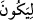
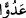
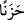
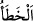
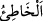
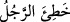
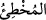
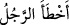
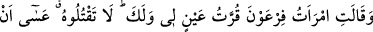
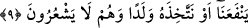

olmasın diye itinâ ve ihtimamla alıp korudular.
“O, sonunda kendileri için bir düşman ve bir tasa olacaktı.”
“
” deki “Lâm”; âkibet ve sayrûret lâmı’dır; illet ve irâde lâm’ı değildir. Çünkü
onlar onu düşman ve derd olması için almamışlardı. Ancak işlerinin âkıbeti böyle oldu.
“lâm” dâhil olduğu şeyi illet konumuna dönüştürdü. Zira onların çocuğu almaları, sevme
ve evlâd edinme gayesi ile olduğu için bu, terettüp edecek şeye yâni düşmanlığa ve
hüzne benzetilmiştir. Konunun tamamı beyan ilmindedir. Burada Mûsâ (a.s.) sanki
üzüntünün kendisi kılınmıştır; çünkü o, Firavun ve yakınlarının üzüntüye düşmelerinin
yegâne sebebi olmuştur.
Kâşifî der ki: “
(düşman)” kelimesi, insanlara ettikleri düşmanlık sebebiyle
Firavun yüzünden denizde boğulmalarını; “
(üzüntü)” ise kocasız kalmaları
sebebiyle kadınlar için büyük üzüntü ve kederi ifâde eder.
“Şüphesiz Firavun ile Hâmân ve askerleri” yaptıkları ve terkettikleri bütün şeylerde
“yanlış yolda idiler.” Yâni onlar gerçekten yanılmakta ve hatâ etmekte idiler.
Dolayısıyla (Mûsâ’yı almış olmaları ve bunda da) yanılmaları ilk yanılma sayılamazdı.
Zira daha önce binlerce masum çocuğun kanına girmişler, sonra da Mûsâ’yı almışlar,
onun büyümesini ve yetişmesini sağlamışlar ve korktukları şeyi yapmasına da kendileri
sebep olmuşlardı.
“
(hata)” kelimesi elif-i maksûre iledir. Gidilen yönden ayrılmak ve dönmek
mânâsına gelir. “
(hatâ eden)” kelimesi bir şeyin hatâ olduğunu bilerek yapan ve
yanılan kimse demektir. Tam hatâ, insanın kendisiyle muâheze olunup sorumlu tutulduğu
yanlıştır. Kişi dininde ve fiilinde yanlış yola saptığı zaman “
” yâni: “Adam
yanlış yola saptı” denir. “
” kelimesi ise bilmeyerek ve yaptığını iyi sanarak istek
ve arzusunun hılâfına hatâya ve yanlışa düşen kimseyi ifâde eder. Kişi, sözünde ve
işinde ayağı kayıp sürçtüğü zaman “
” yâni “Adam hatâ etti, yanıldı” denilir.
Rivâyete göre, Firavun’un yakınları tabutu açıp Mûsâ’yı gördüklerinde, Allah,
Mûsâ’yı sevdirdi, sevgisini onların kalplerine yerleştirdi. Firavun’ın kızı Mûsâ’nın
tükrüğünden alıp cildinde hastalık olan yerlerine sürdü ve ânında iyileşti.
Tabib geldi, dert tamamen şifa buldu.
9. Firavun’un karısı (sepetin içinden erkek çocuk çıkınca kocasına): Benim ve
senin için göz aydınlığıdır! Onu öldürmeyiniz, belki bize faydası dokunur, ya da onu